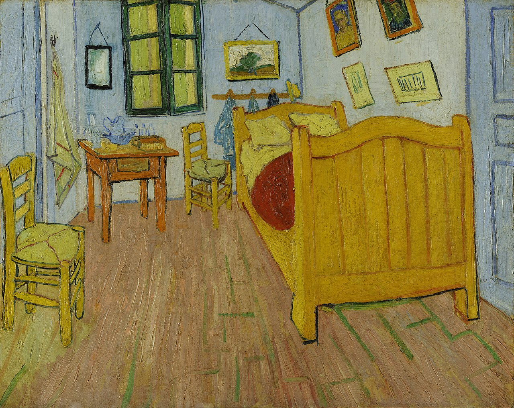
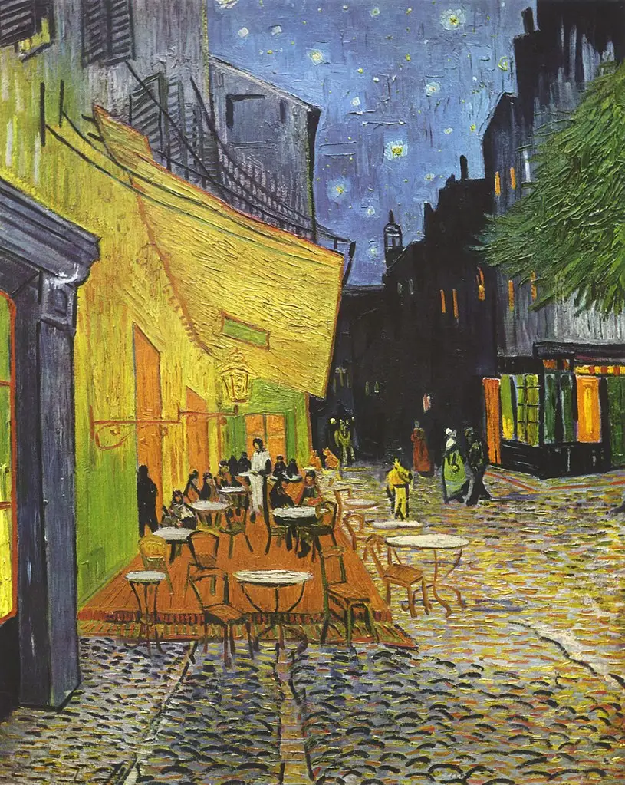
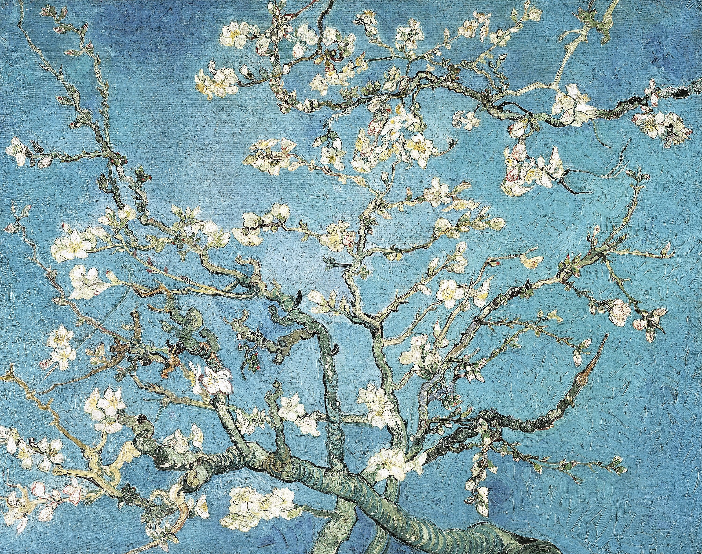
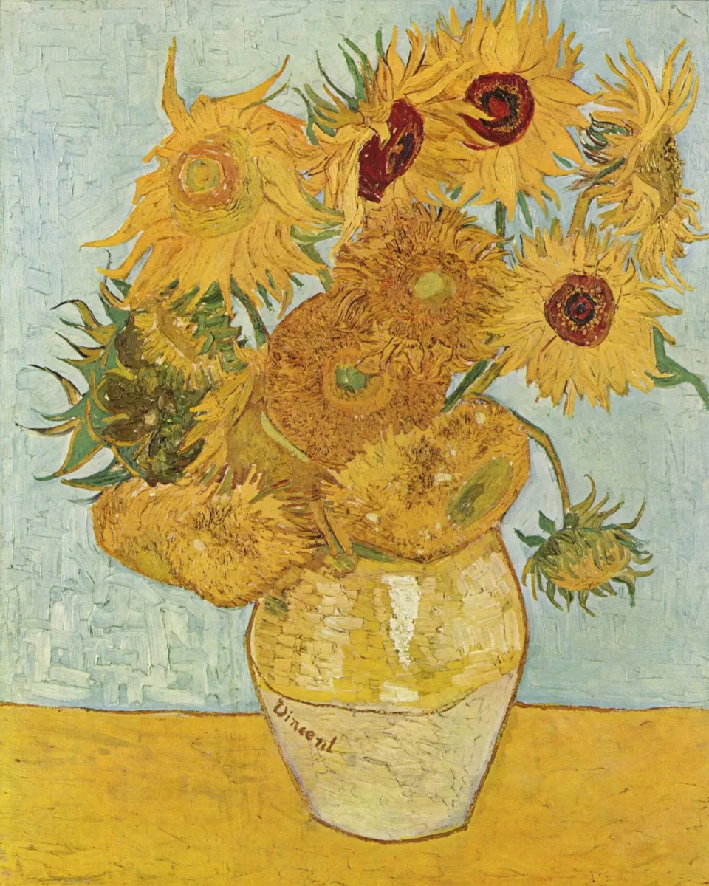
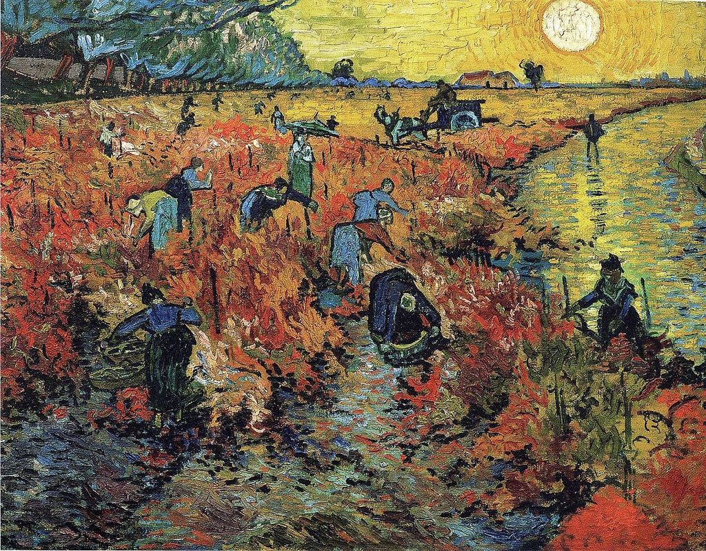
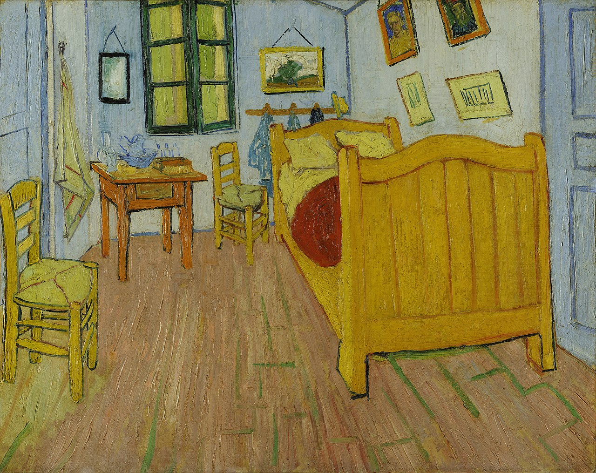
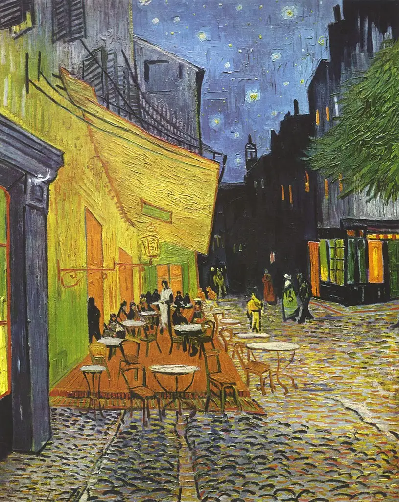
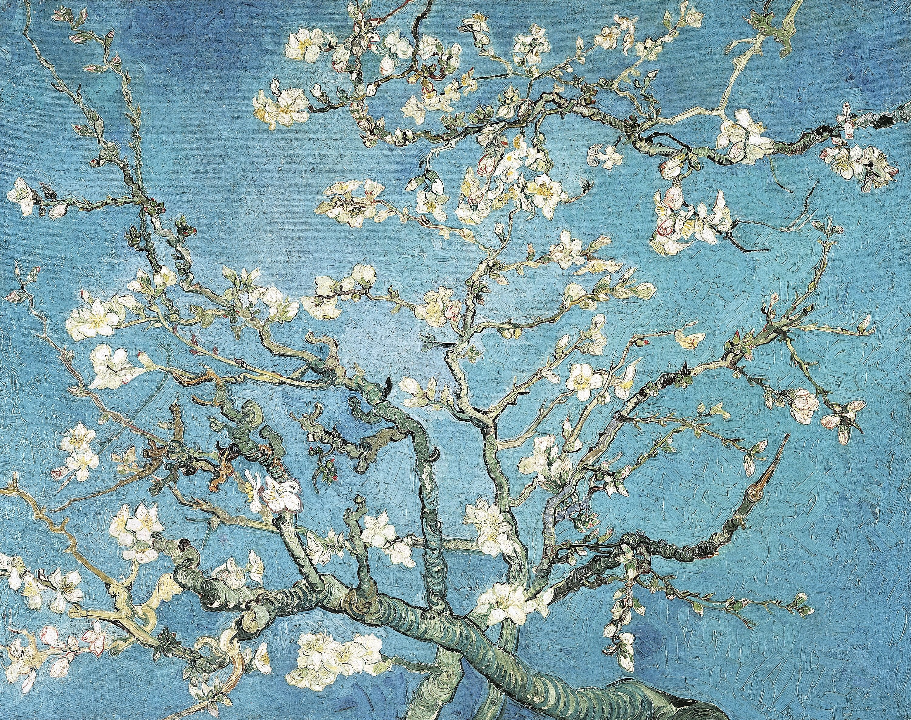
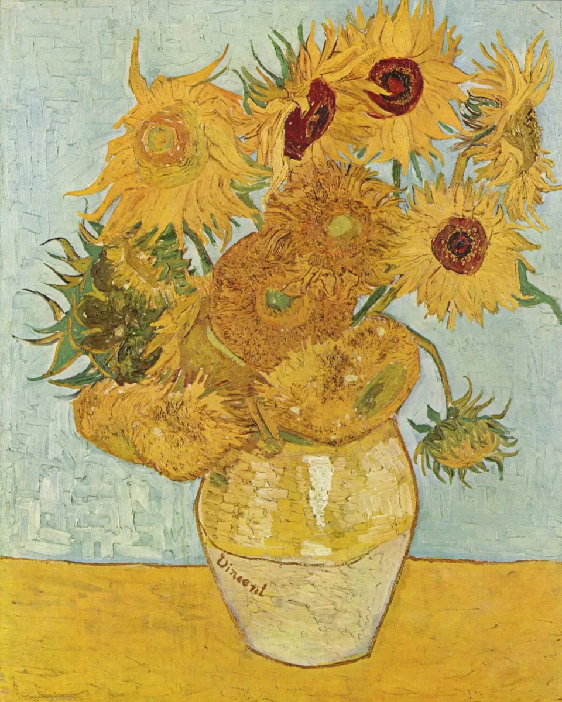
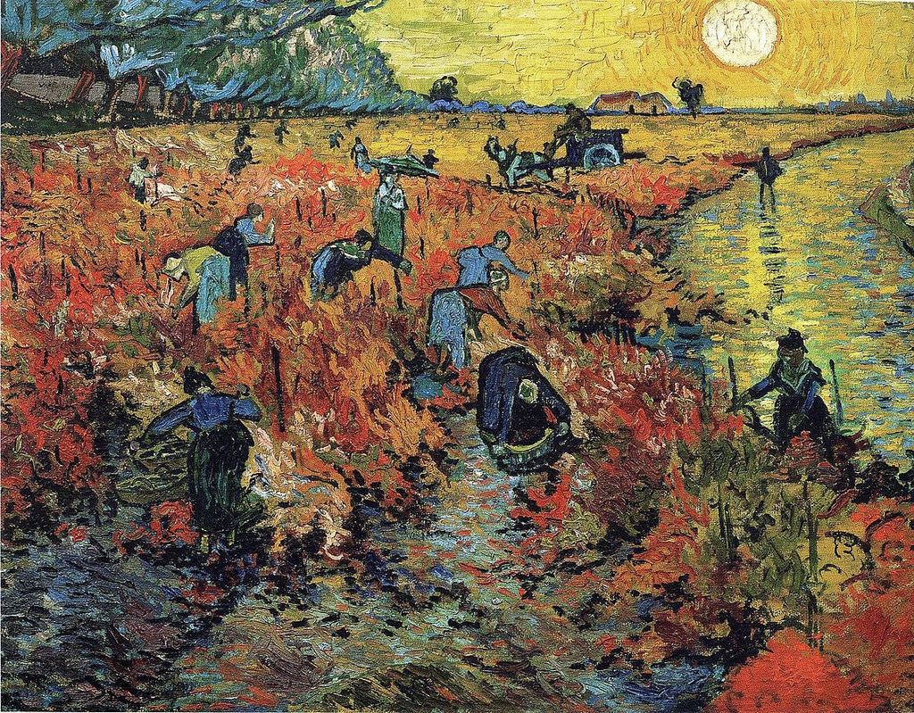

Vincent Van Gogh
Vincent van Gogh, uno dei pittori più iconici della storia dell'arte, ha lasciato un'impronta indelebile nel mondo dell'arte con il suo stile unico e la sua visione audace. Nato nei Paesi Bassi nel 1853, van Gogh ha trascorso gran parte della sua vita cercando di catturare l'essenza della natura e delle emozioni umane attraverso la sua arte. La sua tecnica distintiva, caratterizzata da pennellate audaci e colori vibranti, ha trasformato paesaggi comuni e ritratti in opere d'arte intrise di intensità emotiva. Van Gogh ha lottato con problemi di salute mentale per gran parte della sua vita, ma nonostante le sfide personali, ha prodotto un corpo di lavoro straordinario che continua a ispirare e affascinare le generazioni successive. Opere come "Notte stellata", "Il campo di grano con i corvi" e "I girasoli" sono diventate simboli universali di bellezza e tormento, riflettendo la complessità della condizione umana e la ricerca eterna di significato e bellezza nella vita. La sua vita e la sua arte rimangono una testimonianza vivida del potere trasformativo dell'espressione artistica e della forza della creatività nel superare le avversità.
 








